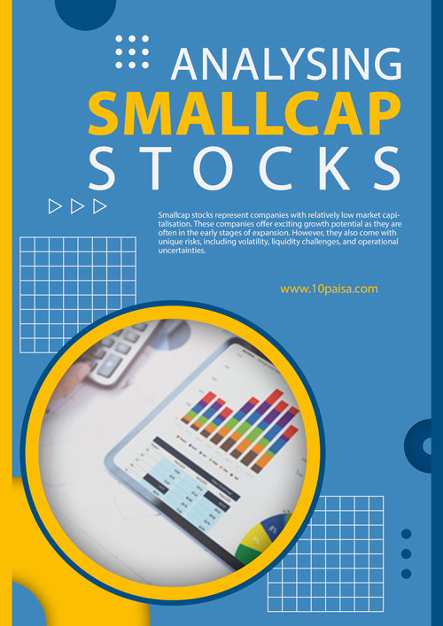

What's New
Adding more Benefits
to your Subscription
"Value-Packed Additions"
Absolutely Free
New Extra Addition
Recommendation of
1 Quality Microcap Stock
(Max. Market Cap 2500 crs.)
Every Thursday
Absolutely Free
with Subscription of Midcaps.in
Extra Value Addition
Now Get Recommendation of
Selected IPOs having Potential
with Subscription of Midcaps.in
Absolutely Free
Course
Get access to Stock Market Simplified Course in your login section.
Stock Market
Simplified
video course
with Subscription of Midcaps.in
Absolutely Free
e-Books
Get access to e-Books in your login section.
Exclusive
e-Books on
Stock Market




with Subscription of Midcaps.in
Premium Recommendations at Affordable Price
Subscription
GET LOGIN DETAILS JUST AFTER SUBSCRIPTION
(By : Credit/Debit Card/Net Banking/PayTM etc.)
22Days : 2H : 19M : 31S
OFFERS ENDING SOON
OFFERS ENDING SOON
Quarterly Plan
3 Months Subscription
₹3000/- 30%off
You Save ₹900
₹2100
Offer Ending Soon
Half Yearly Plan
6 Months Subscription
₹6000/- 40%off
You Save ₹2400
₹3600
Offer Ending Soon
Yearly Plan
12 Months Subscription
₹12000/- 50%off
You Save ₹6000
₹6000
Offer Ending Soon